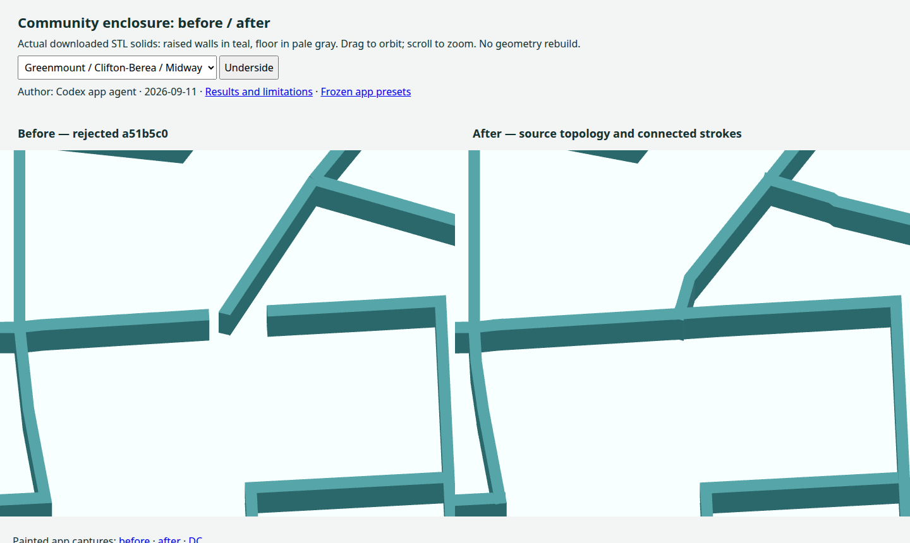

Compare all three actual downloaded modes and close pad views · Current checks and limitations. All retained islands now have full floors. Connections is the default; switches preserve the app camera. Local commit only.
The source-derived boundary network closes the reported seams. Exterior walls remain inside the source coastline so they do not close water inlets into unowned pockets. The genuine central source void stays explicit.
Interactive before/after downloaded STL comparison · Ownership checks, measured changes and limitations

All 55 Baltimore community anchors and eight DC ward anchors have separate enclosures. Baltimore has four supported source components; the two unsupported added shells are gone. The first-exterior floor convention remains.
Baltimore STL · DC STL. Nothing has been pushed or publicly deployed.
These presets use the frozen public inputs and reproduction settings on this local origin.
The default map and 3D preview show the geometry used for export. The prior CSG comparison path remains available with ?geometry=csg; it does not use this correction.
Commands and earlier evidence · Superseded interior-ring attempt
Baltimore's separate closed rings now remain separate paths. The diagonal connectors are removed from the map and STL. Its three exported components remain closed; DC's STL is byte-identical. The unchanged simplifier selects slightly different coastal vertices with separate rings.
Click an image for the full painted map and 3D preview. STL and SVG checks.
Author: Codex app agent · 2026-09-11